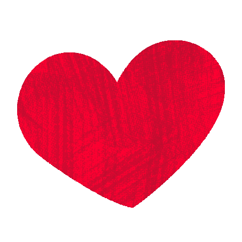

 Queridos alumnos y alumnas:
Estamos llegando al final de la situación de aprendizaje y quiero daros la enhorabuena por el gran trabajo que habéis realizado. Habéis aprendido, investigado, colaborado y puesto en práctica vuestros conocimientos sobre la salud. Cada paso que habéis dado os ha ayudado a crecer como personas responsables, capaces de cuidar de vosotros mismos y de los demás.
Estoy muy orgulloso/a de vuestro esfuerzo, de vuestras ideas y de cómo habéis trabajado en equipo. ¡Sois un ejemplo de que aprender puede ser emocionante, útil y divertido! 🎉